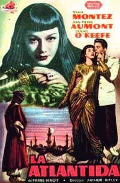

Sacred Texts Atlantis
Buy this Book at Amazon.com
|

Poster from the French 1948 production of Atlantida (Fair Use) |
Atlantida(L'Antlantide)by Pierre BenoitTr. by Mary C. Tongue and Mary Ross[1920] |
This French novel of 'Atlantis in the Sahara' made a huge splash when it was published. The exotic Saharan setting, the stories of desert survival, the overpowering allure of the last Queen of Atlantis, make a memorable, if a bit pulpy, read. Over a dozen films have been made of this plot, to the point where it is almost a subgenre of the lost-civilization adventure film in itself. The author was sued (and lost) at one point because the plot is fairly close to that of Haggard's She. However, it is thought Benoit had no exposure to Haggard prior writing L'Antlantide, so this appears to be a case of literary convergent evolution. This online text was scanned and proofed from scratch, from a 1920 edition of this translation of the book. Therefore it may differ slightly from the Project Gutenberg version, which was sourced from a 1964 Ace paperback edition. That edition has 192 pages and some obvious differences, e.g., a dedication in the Ace which does not appear in the 1920 printing. NOTE: Unicode is used to display Greek in this text. I've also made a sketch map of the route in the book through the Sahara.
{kind=link}